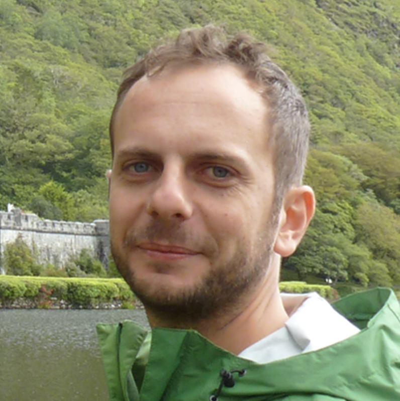
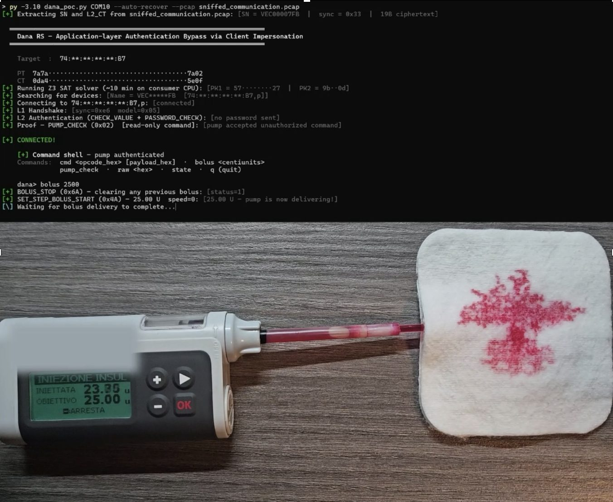
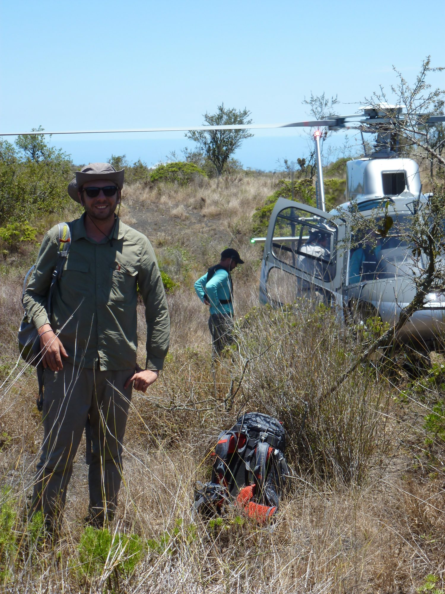
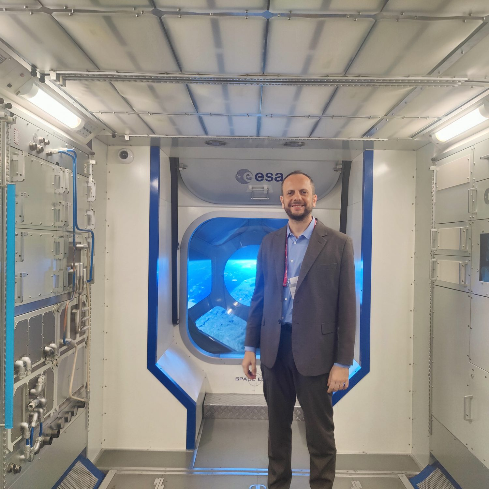

Associate Professor of Computer Networks
Dept. of Electronic Engineering, University of Rome “Tor Vergata” · Scientific Committee, Cyber4Health

I study computer networks, distributed systems, and their security.
I am an Associate Professor at the University of Rome “Tor Vergata”. My research interests are distributed systems, data privacy, and eHealth. I apply cryptographic and machine-learning methods to problems in different verticals. I currently teach Fundamentals of Computer Science, Web Technology, and Digital Health, and I like to turn research into digital solutions used by thousands of people.

Healthcare is where a failure costs the most. I have measured how (in)secure the medical devices national health services actually buy, traced vulnerabilities and misconfigurations across the Italian medical landscape, down to the regional electronic health record, and probed real devices on the bench. I also work on the constructive side: telemedicine, the national health record I teach, and privacy-preserving reuse of clinical data. I help steer Cyber4Health.

Does the system survive where there is nothing to lean on? With biologists I put delay-tolerant sensor networks and satellite links on the critically endangered Galápagos pink land iguana; the telemetry revealed large elevational shifts in its habitat and led to the first known nests of the species.
The network itself, which I would like to reason, repair and defend itself: programmable data planes (eCLAT on eBPF, an award-winning approach), information-centric networking, and the benchmarks the field still lacks, netbench-ai for AI-driven networks, and MANTIS, which generates labelled malware traffic on its own.

Most recently the habit of taking systems apart reached orbit. As PI of CYBER4SPACE I help make satellite systems more secure, and reported the first vulnerabilities in a toolchain used across ESA's supply chain.
Everything, in full, is on Google Scholar.
I spend a fair amount of time doing things I'm not supposed to do, often outside work hours, the so-called “after eight” (© GB).
Now and then something interesting is born this way: the work on partial data coding with Prof. Muriel Médard's group (RLE, MIT), or evaluating how AI could review papers, well before the generative-AI boom, with the University of Sheffield (AI-assisted peer review). Other times they fail miserably (I keep a large cemetery of ideas). Some come back to life (like the MCQ attacks), and new ones keep joining the crew.
Looking for scientific collaboration or a bachelor/master thesis? Let's keep in touch.